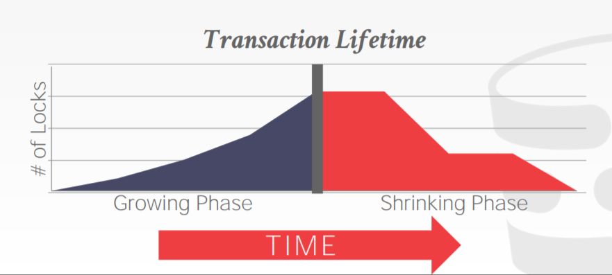
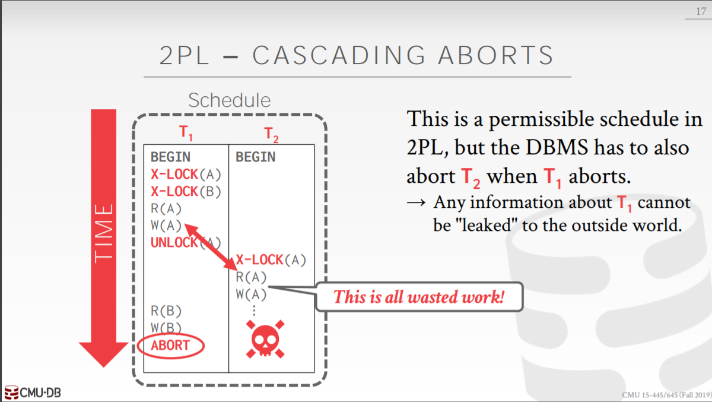
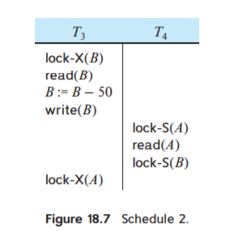
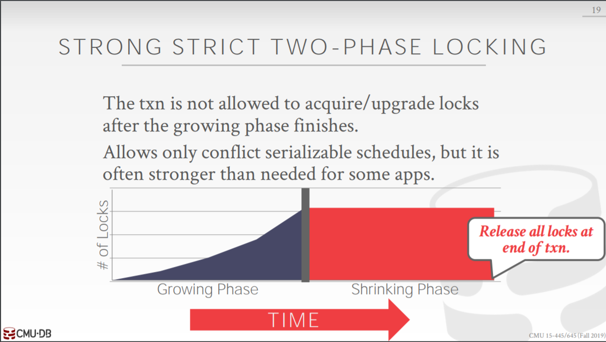
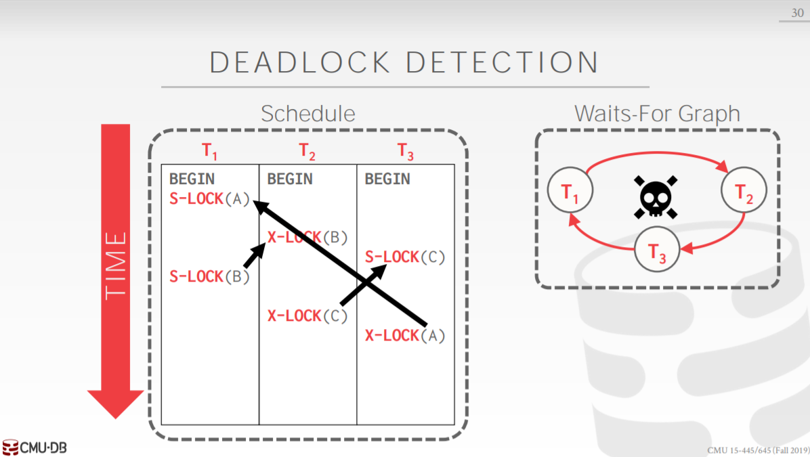
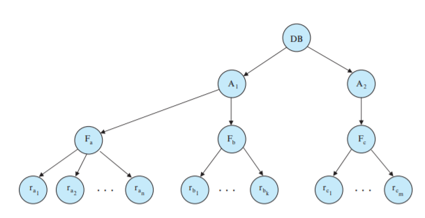
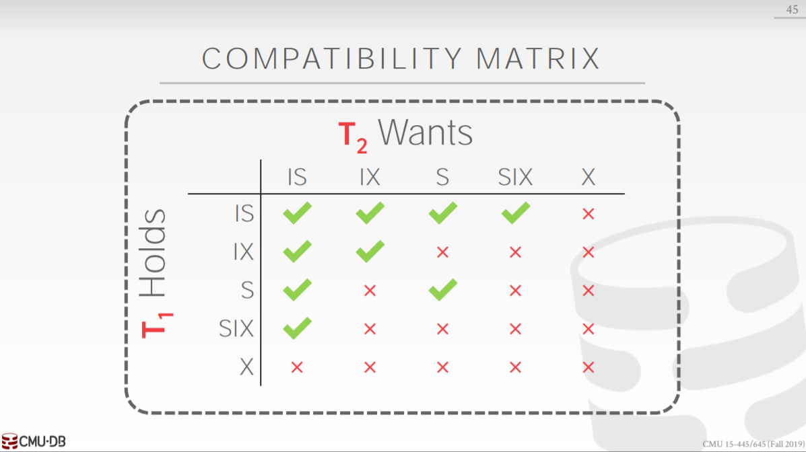
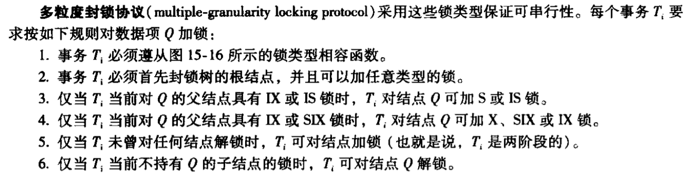

[CMU15445]:两阶段锁
Two-Phase Locking Protocol
当一个调度遵循两阶段锁协议的时候，它就一定是冲突可串行化的，该协议将一个事务分成了两个阶段
增长阶段(growing phase)
该阶段中一个事务可以获得锁，但不能释放任何锁
缩减阶段(shrinking phase)
该阶段中一个事务可以释放锁，但是不能获得任何新锁
一个事务一开始时是处于增长阶段，一旦事务释放了锁，它就进入了缩减阶段，故一个事务的生命周期中锁的数量如图

封锁点：
一个事务最后获得锁的位置被称为封锁点
优点
两阶段锁保证了一个调度是冲突可串行化的，如今的数据库基本都支持两阶段锁协议
缺点
两阶段锁协议并不能避免脏读以及死锁的问题
脏读

上图所示的调度完全遵循两阶段锁协议，但是依旧发生了脏读现象，这就导致了如果$T_1$终止的话就会发生级联回滚，即$T_2$也得终止
- 解决方案: Strong Strict 2PL
死锁

上图就是一个死锁的例子，同样也遵循两阶段锁协议
除了以上两个调度外，一些不满足该协议但是满足冲突可串行化的调度就无法使用，可能会降低系统的并发性
Strong Strict Two-Phase Locking Protocol
Strong Strict 2PL(SSPL)是2PL的变种，在该协议当中，仅当事务提交之后才会释放其拥有的锁

当称一个协议**严格(Strict)**时，那么在事务当中，如果一个数据项的值被修改，那么在该事务提交之前，不允许任何其它事务对该数据项
进行读写操作， 这避免了脏读，简化了级联回滚的过程，这样只需要将数据项恢复为旧值即可
2PL DeadLock Handling
在数据库当中可能会发生死锁，有两种方法可以用于处理死锁问题: 死锁检测与恢复，死锁预防，如果系统陷入死锁状态的概率较高，通常采用死锁预防机制，否则一般采用检测与恢复机制
死锁检测
可以使用一种被称作**等待图(wait-for graph)**的有向图来判断是否发生了死锁，图中的每一个节点都是一个事务，若有$T_i$–>$T_j$,那么$T_i$正等待$T_j$释放一个数据项，当等待图中出现了环时即表明出现了死锁

在真实的数据库系统中，可以使用一个单独的线程，每个一段时间就利用系统系统的元数据来生成等待图，然后使用检测算法来判断是否有死锁，即等待图是否有环，检测的周期取决于两个因素
- 死锁发生的频率如何
- 有多少事务将收到死锁影响
死锁恢复
解除死锁最有效的方式就是进行事务回滚，通常会进行几个动作
选择牺牲者
当多个事务之间产生死锁时，系统会根据以下要素来决定回滚哪个事务
- 事务的执行进度
- 事务使用数据项的数量
- 事务使用锁的数量
- 回滚操作需要牵涉多少事务
回滚
回滚可以选择全部回滚，即终止事务之后重新启动它，还可以使用部分回滚，即回滚到不会发生死锁的地方，当这样做需要系统维护额外的元数据
饥饿问题
回滚时还需要考虑事务饥饿问题，通常会将回滚次数也作为选择牺牲者的因素
死锁预防
死锁预防的思想就是确保数据库不会发生死锁，这里有两种基于时间戳的死锁预防机制，这两种机制都基于同一个事实: 越老优先级越高
wait-die(老的等待年轻的)
当事务$T_i$申请的数据项当前被$T_j$持有时，如果$T_i$的时间戳更小($T_i$更老), 那么$T_i$就可以等待，否则$T_i$直接回滚
wound-wait(年轻的等待老的)
当事务$T_i$申请的数据项当前被$T_j$持有时，如果$T_i$的时间戳更小($T_i$更老)，那么$T_j$直接回滚, $T_i$抢占其锁， 否则$T_i$等待
当事务回滚时，处于饥饿问题的考虑，事务的时间戳应该和回滚前是一样的
Lock Granularities
接下来介绍一种关于数据库管理锁粒度的机制，被称为多粒度封锁协议，可以使用粒度树来展示系统中所用锁的粒度

在上面这张图中，最上层是数据库级，第二层是area级，第三层是文件级，最后一层是record级，可以在这些节点上的任意一个节点上加锁，考虑通常模式的锁模式，在粒度树中，当给一个节点加锁的时候，所有子节点都会同时加上隐式锁，但这样会导致一个问题，假设Fb节点加上了互斥锁，那么当给A1加共享锁的时候就会失败，因为锁不相容，而这必须得靠数据库扫描整棵树才能知道能不能加锁，这样做反而失去了粒度树的意义，因此引入一种新的意向锁模式(intention lock mode)
使用意向锁模式的意义是暗示子节点拥有的是怎样的锁，该模式中增加了新的三种锁
意向共享模式锁(IS)
当一个节点加上该锁时，表明所有的字节点都显式加上了共享锁
意向排他模式锁(IX)
当一个节点加上该锁时，表明所有的子节点都显式加上了排他锁
共享意向排他模式锁(SIX)
当一个节点加上该锁时，所有的字节点都隐式加上了共享锁，其中某些子节点显式加上了排他锁
下面是锁的相容矩阵

当对一个节点加锁时，有很多限制

本博客所有文章除特别声明外，均采用 CC BY-SA 4.0 协议 ，转载请注明出处！